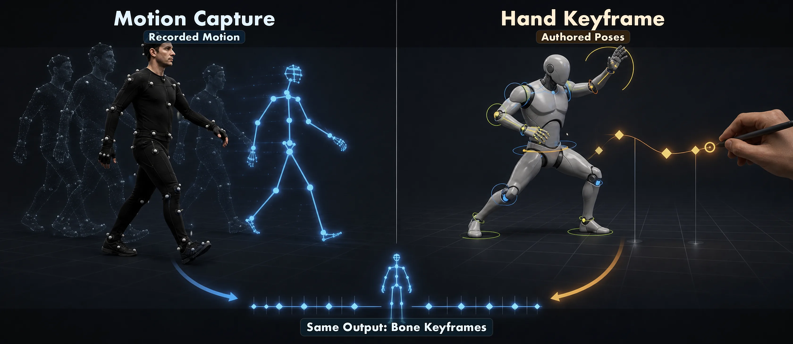
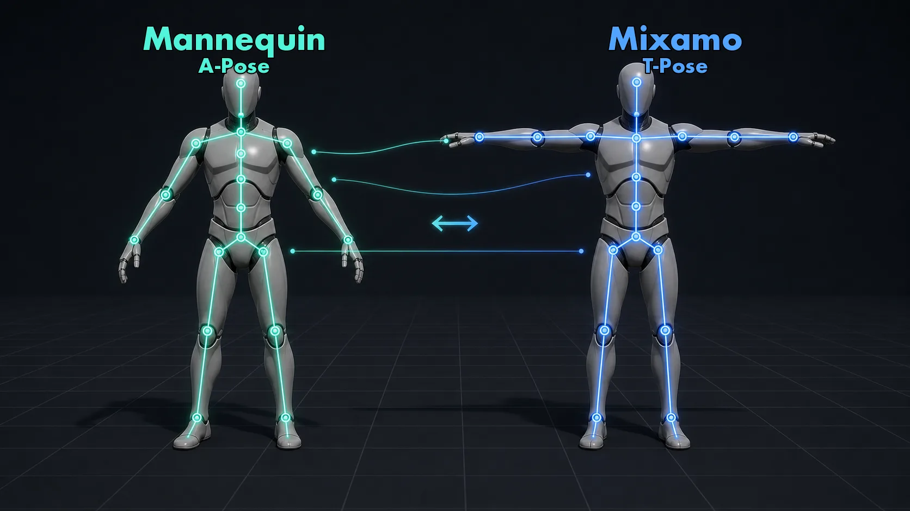
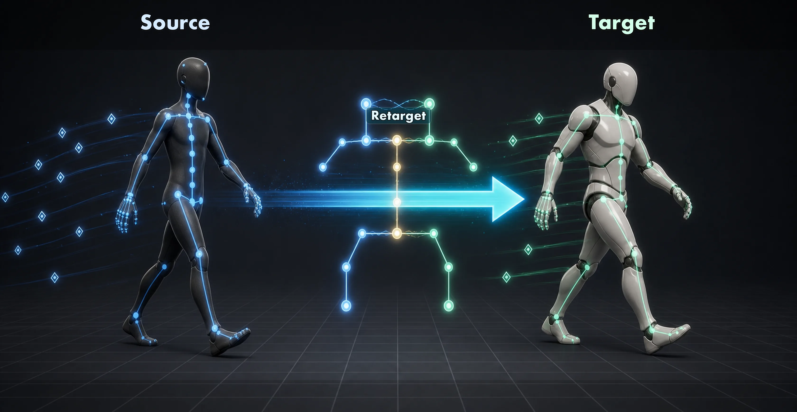
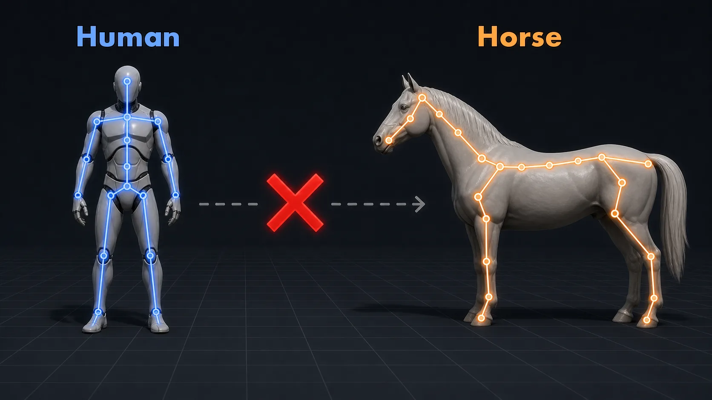
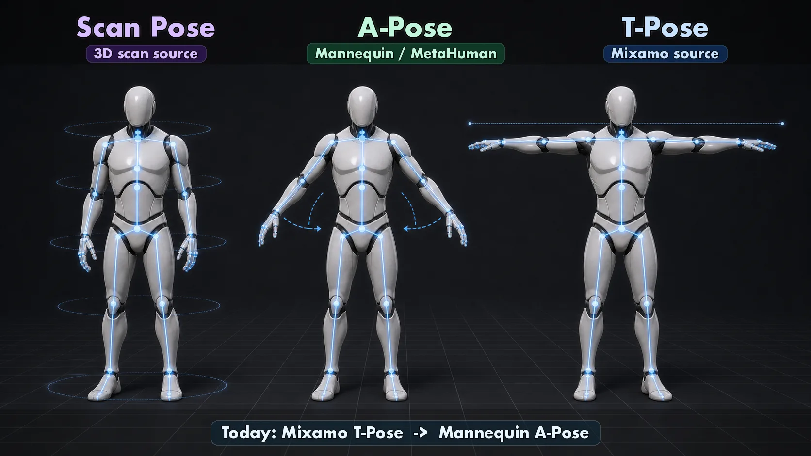
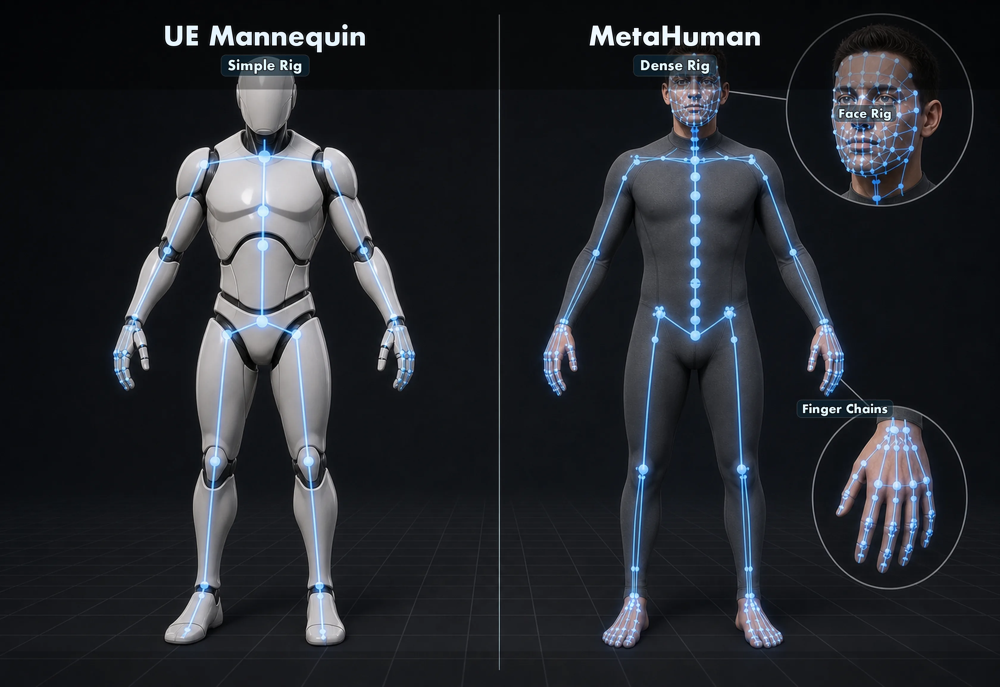

10주차 1교시 — 애니메이션 리타겟팅 개념과 Mixamo 자산 준비 (학생용)
관련 문서
| 관계 | 문서 |
|---|---|
| 강의 계획서 | 강의계획서: Game Engine II |
| 강의 아웃라인 | 10주차 아웃라인: 애니메이션 리타겟팅 |
- 애니메이션 리타겟팅의 정의와 매핑 단계가 필요한 이유를 설명할 수 있다
- Rest Pose 3종(Scan / A / T)의 차이와 MetaHuman / Mixamo / ThirdPerson Mannequin의 Rest Pose를 구분할 수 있다
- Mixamo에서 캐릭터와 애니메이션을 적절한 옵션(T-Pose / Without Skin / In Place)으로 받아 다음 시간 import 준비를 완료할 수 있다
지난 주에 시네 카메라와 시퀀서로 카메라 워크를 만들었고, 오늘은 그 카메라가 비추는 캐릭터에게 동작을 입히는 방법을 배웁니다.
MetaHuman, Mixamo, ThirdPerson Mannequin 은 각자 다른 형태를 가진 캐릭터인데, 한 동작 데이터를 만들었을 때 이 데이터를 다른 캐릭터에 그대로 입힐 수 있을까요? 답은 '경우에 따라' 이며, 그 '경우'를 결정하는 조건이 오늘의 핵심입니다.
모캡 vs 핸드 키프레임
캐릭터 동작은 크게 두 방식으로 제작합니다.
- 모션캡처(Motion Capture): 실제 사람이 모캡 슈트를 입고 움직인 데이터를 캐릭터에 입히는 방식으로, 디테일이 풍부하고 자연스럽습니다.
- 핸드 키프레임(Hand Keyframe): 애니메이터가 본을 하나하나 손으로 회전시켜 키프레임으로 기록하는 방식으로, 의도가 명확하고 양식화된 동작이 만들어집니다.

두 방식 모두 결과물은 본 위에 얹힌 키프레임 시퀀스 이며, 캐릭터가 다르더라도 본 구조가 비슷하면 그 키프레임을 옮겨 쓸 수 있다 — 이것이 오늘 주제의 출발점입니다.
Mixamo 라이브러리
오늘 사용할 자산은 Adobe 가 운영하는 무료 캐릭터·모션캡처 라이브러리인 Mixamo 로, 회원가입만 하면 전부 받아서 사용할 수 있습니다.
Mixamo 화면에서는 Characters / Animations 탭, 검색창, 우측 3D 미리보기 영역을 먼저 확인합니다.
Mixamo 의 캐릭터·애니메이션은 개인·상업·비영리 프로젝트에 로열티 프리 로 사용 가능하므로(Adobe ToS 기준), 본인 기말 시네마틱 영상에 그대로 사용해도 되며 출처 표기는 권장사항입니다.
라이브러리의 동작들을 우리 ThirdPerson 캐릭터에 입히려 해도, 본 구조가 다르기 때문에 단순히 import 만으로는 바로 적용되지 않고 리타겟팅 단계가 필요합니다.
다음 시간 만날 우리 캐릭터
다음 시간부터 동작을 입힐 타깃 캐릭터는 ThirdPerson 템플릿의 Manny / Quinn, 줄여서 SK_Mannequin 으로, A-Pose 자세에 본 구조가 단순하여 학생 PC 에서도 가볍게 동작합니다.

1. 리타겟팅이란
본 위에 얹힌 키프레임
본격적으로 들어가기 전에 용어부터 정리합니다.
- 본(Bone) = Skeleton 의 한 마디. 사람의 관절 사이 뼈 하나에 해당합니다. 캐릭터 한 개에 보통 50~150 개가 들어갑니다.
- 애니메이션 = 본의 회전·이동을 시간축에 따라 기록한 키프레임 시퀀스. 예: '0초에 왼팔 이만큼 회전, 0.1초에 이만큼 회전, …' 형태의 데이터.
이 키프레임을 다른 캐릭터에 그대로 옮기면 어떻게 될까요? 본 이름·개수·길이가 같으면 그대로 적용되지만, 다르면 매핑이 필요합니다.
리타겟팅 = 전이
리타겟팅(retarget)은 영어로 '대상을 바꾸다'를 의미하며, 한 캐릭터의 애니메이션을 다른 캐릭터로 전이(transfer) 하는 작업입니다.

조금 더 정확히 말하면, 리타겟팅은 모델을 바꾸는 작업이 아니라 애니메이션 데이터를 다른 Skeleton 이 이해할 수 있게 번역하는 작업입니다.
예를 들어 Mixamo 애니메이션은 Hips, LeftArm, LeftUpLeg 같은 Mixamo 본을 기준으로 저장되지만, ThirdPerson Mannequin 은 pelvis, upperarm_l, thigh_l 같은 다른 이름과 구조를 사용하므로 엔진에게 다음과 같은 대응 관계를 알려줘야 합니다.
Mixamo 의 LeftArm = Mannequin 의 upperarm_l Mixamo 의 Hips = Mannequin 의 pelvis
이 대응표가 없으면 애니메이션 파일 안에 키프레임 숫자는 있어도, 그 숫자를 어느 팔·다리에 적용해야 하는지 알 수 없으므로 리타겟팅은 단순 복사가 아니라 동작의 의미를 유지하면서 타깃 캐릭터의 본 구조에 맞게 다시 해석하는 과정에 가깝습니다.
| 리타겟팅에서 유지하려는 것 | 타깃 캐릭터에 맞게 다시 계산되는 것 |
|---|---|
| 걷기·뛰기·점프 같은 동작의 의도 | 본 이름과 chain 대응 |
| 키프레임의 타이밍과 리듬 | 팔·다리 길이에 맞춘 관절 회전 |
| 골반·손·발의 상대적 움직임 | A-Pose / T-Pose 차이를 보정한 기준 자세 |
리타겟팅 결과는 원본 동작의 의미를 유지하지만, 캐릭터의 키·팔 길이·rest pose 가 다르면 발이 살짝 미끄러지거나 어깨가 어색해질 수 있으며, 이것은 실패라기보다 다음 시간 IK Retargeter 에서 조정할 지점이 보이는 것입니다.
오늘은 한 방향만 다룹니다: Mixamo 캐릭터의 동작 → ThirdPerson Mannequin. 반대 방향이나 MetaHuman 으로의 전이도 가능하지만, 실습실 PC 성능을 고려해 MetaHuman 은 개념만 소개하고 실습은 Mannequin 으로 진행합니다.
가능 조건: 형태 유사성
전이가 항상 가능한 것은 아니며, 한 가지 핵심 조건이 있습니다.
두 캐릭터의 형태와 골격 구조가 비슷해야 한다. 사람 → 사람: 가능. 사람 → 말: 불가능 (다리 개수부터 다름).

리타겟팅은 만능이 아니며, 인간형 ↔ 인간형, 사족보행 ↔ 사족보행 처럼 형태가 같은 그룹 안에서만 작동합니다.
오늘 다루는 Mixamo Passive Marker Man, Unreal ThirdPerson Mannequin, MetaHuman 은 모두 인간형이므로 어떤 조합이든 리타겟이 가능하지만, 본 이름·개수·길이가 서로 달라 매핑 단계가 필요합니다.
| 조합 | 리타겟 가능? | 이유 |
|---|---|---|
| Mixamo → ThirdPerson Mannequin | 예 | 둘 다 인간형, 본 위치 대응 가능 |
| Mixamo → MetaHuman | 예 | 둘 다 인간형 (단 MetaHuman 본이 더 정밀) |
| 사람 → 말 | 아니요 | 형태 다름, 본 개수·구조 매칭 안 됨 |
| 사람 → 4족 로봇 | 아니요 | 형태 다름 |
| 사람 → 2족 로봇 (인간형) | 예 | 형태 같음 |
사전 정의 — 다음 시간 자주 등장할 단어 4개
Mixamo 다운로드로 들어가기 전에, 다음 시간 IK Rig 에서 만날 용어 4개를 짧게 짚고 갑니다. 외우기보다 '이런 개념이 있구나' 정도만 인지하면 됩니다.
| 용어 | 한 줄 정의 |
|---|---|
| Skinning | 메시(피부) 정점이 본을 따라가도록 묶인 상태. 본이 움직이면 메시가 따라옴 |
| Without Skin (Mixamo 옵션) | 새 캐릭터 메시 없이 애니메이션 데이터만 받는 옵션. 캐릭터 본체는 따로 받았으니 동작만 필요할 때 |
| FK (Forward Kinematics) | 부모 본부터 자식 본으로 회전이 전달되는 기본 방식. 어깨 돌리면 팔꿈치도 돌아감 |
| IK (Inverse Kinematics) | 손·발 같은 끝점을 맞추기 위해 관절을 역으로 계산하는 방식. 다음 시간 IK Rig 의 IK |
2. Rest Pose 와 본 구조
Rest Pose 3종
본 구조를 매핑하려면 Rest Pose = 애니메이션이 적용되지 않은 기본 자세 도 알아야 하는데, 모든 캐릭터는 이 기본 자세에서 시작하며 같은 인간형이어도 어떤 rest pose 로 설정했는지에 따라 본 정렬이 미묘하게 달라집니다.

| Pose | 형태 | 어디서 자주 보이나 |
|---|---|---|
| Scan Pose | 3D 스캔 시점의 자연스러운 자세 (팔 약간 내림) | 3D 스캔 데이터 원본 |
| A-Pose | 팔을 약 45° 아래로 — 알파벳 A 모양 | MetaHuman, Unreal ThirdPerson Mannequin |
| T-Pose | 팔을 수평으로 벌림 — 알파벳 T 모양 | Mixamo, 게임 엔진의 전통적 기본 |
T-Pose 는 어깨 관절이 가장 잘 펴진 자세라 본 정렬이 깔끔해 게임 엔진의 오랜 표준이었고, A-Pose 는 어깨가 자연스러운 위치에 있어 어깨 메시 변형이 더 자연스럽습니다. 두 방식 모두 장단이 있습니다.
소스 Mixamo = T-Pose, 타깃 ThirdPerson Mannequin = A-Pose. Pose 가 다르므로 그대로 입힐 수 없고, 매핑이 필요하다는 사실이 여기서 다시 한 번 확인됩니다.
Mannequin vs Mixamo 본 구조
같은 인간형이어도 본 이름과 개수가 어떻게 다른지 비교해봅니다.
핵심 부위 6개만 보면 충분합니다 (외우는 게 아니라 "이름 달라도 위치 같다"의 증거):
| 부위 | SK_Mannequin (Unreal) | SK_Mixamo |
|---|---|---|
| 골반 | pelvis | Hips |
| 척추 | spine_01 | Spine |
| 쇄골 | clavicle_l | LeftShoulder |
| 위팔 | upperarm_l | LeftArm |
| 허벅지 | thigh_l | LeftUpLeg |
| 발 | foot_l | LeftFoot |
이름은 완전히 다르지만 '위팔'에 해당하는 본은 양쪽 모두에 존재하며, 위치와 역할은 같고 라벨만 다를 뿐입니다.
이름이 달라도 위치·역할이 대응되면 매핑할 수 있다. 다음 시간에 IK Rig 자산으로 이걸 명시적으로 매핑합니다. 'SK_Mixamo 의 LeftArm = SK_Mannequin 의 upperarm_l' 이렇게.
전체 매핑 표 보기 (참고용 — 외울 필요 없음)
| 부위 | SK_Mannequin (Unreal) | SK_Mixamo |
|---|---|---|
| 골반 | pelvis | Hips |
| 척추 | spine_01, spine_02, spine_03 (3단) | Spine, Spine1, Spine2 (3단) |
| 어깨 | clavicle_l, clavicle_r | LeftShoulder, RightShoulder |
| 위팔 | upperarm_l, upperarm_r | LeftArm, RightArm |
| 아래팔 | lowerarm_l, lowerarm_r | LeftForeArm, RightForeArm |
| 손 | hand_l, hand_r | LeftHand, RightHand |
| 허벅지 | thigh_l, thigh_r | LeftUpLeg, RightUpLeg |
| 종아리 | calf_l, calf_r | LeftLeg, RightLeg |
| 발 | foot_l, foot_r | LeftFoot, RightFoot |
| 머리 | head | Head |
참고 — MetaHuman 본 구조
MetaHuman 본 구조는 참고만 하고 넘어갑니다.

| 부위 | SK_Mannequin | MetaHuman |
|---|---|---|
| 척추 | 3단 (spine_01..03) | 6단 (spine_01..06) |
| 손가락 | 단순 | 각 손가락 풀 chain (관절 3-4단) |
| 얼굴 | 거의 없음 | 표정용 본 100+ |
| LOD | 1단 | 다단 (LOD0~LOD8) |
MetaHuman 은 정밀한 만큼 무거워 실습실 PC 에서는 강의 시간 안에 부드럽게 동작하지 않을 수 있으므로, 오늘은 Mannequin 으로 진행합니다. 절차 자체는 동일하며, IK Rig 생성, retarget chain 매핑, 변환 결과를 새 애니메이션으로 내보내는 과정은 타깃이 Mannequin 이든 MetaHuman 이든 같은 방식으로 작동합니다. 본인 PC 사양이 충분하다면 기말 프로젝트에서 MetaHuman 으로 시도해도 좋습니다.
3. 데모 — Mixamo 자산 받기
이제 직접 손을 움직여 작업을 시작하기 위해 브라우저에서 Mixamo 사이트를 엽니다.
3.1 Mixamo 사이트 접속
mixamo.com 으로 이동
- 브라우저 (Chrome / Edge / Safari) 주소창에
mixamo.com입력 → Enter - 페이지 헤더 확인 — 좌측 Mixamo 로고 + 우상단
Sign In버튼 (회색) 또는 이미 로그인 상태면 사용자 아이콘 Sign In클릭 → Adobe ID 로그인 페이지로 자동 이동 (URL 이auth.services.adobe.com으로 바뀜)
Mixamo 로그인은 Adobe 계정 화면으로 이동합니다. URL이
auth.services.adobe.com으로 바뀌어도 정상입니다.
URL 이 mixamo 가 아니라 auth.services.adobe.com 으로 바뀌어도 정상이며, Mixamo 로그인은 Adobe 계정 시스템을 그대로 빌려 씁니다.
Adobe 계정 로그인 또는 신규 가입
경우 A — Adobe 계정 이미 있음:
- 이메일 입력 → Continue
- 비밀번호 입력 → Continue
- 2단계 인증 (있으면 코드 입력)
- 자동으로 mixamo.com 홈으로 리디렉션
경우 B — 신규 가입 (계정 없음):
- 로그인 화면 하단
Create an account클릭 - 이메일 입력 → 비밀번호 설정 → 이름 / 생년월일 / 국가 입력 → Create account
- 이메일 인증 메일 확인 (대학 메일이면 스팸함도 체크)
- 인증 링크 클릭 → mixamo.com 자동 리디렉션
- 가입 시간: 평균 1-2분
로그인 성공 화면 — 다음 3가지 확인
- URL 이 다시
www.mixamo.com으로 돌아왔는가 - 상단 헤더 좌측에
Characters와Animations두 탭 보이는가 - 우상단에 사용자 이름 또는 아바타 아이콘 표시되는가
3가지가 모두 보이면 로그인 성공이고, 안 되면 페이지 새로고침 (F5 / Cmd+R) 후 다시 시도합니다.
3.2 캐릭터 받기 — Passive Marker Man
먼저 Passive Marker Man 캐릭터를 받습니다. 이 캐릭터를 선택한 이유는 표준 T-Pose 가 깔끔하고, 옷이나 머리카락이 없는 단순 형태라 본 매핑이 정상인지 디버깅할 때 가장 쉽기 때문이며 본 강의의 소스 캐릭터로 고정합니다.
Characters 탭에서 검색
- 헤더 좌측의
Characters탭 클릭 → 화면 레이아웃이 바뀜:
- 좌측 (약 60%): 캐릭터 썸네일 그리드 (4열 × 다중 행)
- 우측 (약 40%): 미리보기 viewport (캐릭터 3D 모델)
- 좌측 상단: 검색창 (
Search Character...placeholder) + 카테고리 필터
- 좌측 검색창 클릭 →
passive marker또는 짧게passive타이핑 - 검색 결과가 1-2초 내 좁혀짐 →
Passive Marker Man썸네일 클릭
Characters 탭에서
passive marker를 검색하고, Passive Marker Man을 선택한 뒤 우측 미리보기에서 T-Pose를 확인합니다.
검색이 즉시 안 좁혀지면 Enter 한 번. 검색 결과 0개면 Mixamo 카탈로그에서 일시적으로 빠진 것 — x bot 또는 y bot 로 대체 가능 (둘 다 같은 형태).
미리보기 확인
- 우측 viewport 에 캐릭터가 T-Pose 로 정면을 향해 서 있음 확인 (자동 회전 약간 있음)
- viewport 마우스 조작 (선택):
- 드래그 (좌클릭 + 이동) = 캐릭터 회전
- 스크롤 휠 = 줌 인/아웃
- 우클릭 드래그 = 카메라 패닝
- T-Pose 가 맞는지 확인 — 팔이 수평으로 벌려진 알파벳 T 모양
Mixamo 의 캐릭터는 모두 T-Pose 가 기본이며, 다음 단계에서 Animation 을 받을 때도 같은 T-Pose 기준으로 동작이 구성되어 있습니다.
Download 버튼 클릭
- 우측 viewport 상단
DOWNLOAD버튼 (주황색, 가장 큰 버튼) 클릭 - 다운로드 설정 모달 다이얼로그가 화면 중앙에 뜸 (배경 어두워짐)
- 다이얼로그 제목:
DOWNLOAD SETTINGS
캐릭터 다운로드 설정에서는 Format을
FBX Binary (.fbx), Pose를T-Pose로 맞춥니다.
Download Settings 정확히 지정
다이얼로그에 옵션 4개 (또는 5개) 표시. 캐릭터 다운로드는 다음과 같이:
| 옵션 | 우리 선택 | 다른 옵션 (참고) |
|---|---|---|
| Format | FBX Binary (.fbx) | FBX ASCII / DAE / USDz / MDD |
| Pose | T-Pose | A-Pose / Original Pose |
다른 옵션은 신경 쓰지 않아도 되며, 빠진 옵션(예: Skin)은 캐릭터 다운로드 시 자동으로 With Skin 처리되어 메시·본·머티리얼이 모두 포함됩니다.
Download 실행 + 다운로드 폴더 확인
- 다이얼로그 우하단
DOWNLOAD버튼 (주황색) 클릭 - 다이얼로그가 닫히면서 브라우저 하단에 다운로드 진행 표시 (Chrome) 또는 다운로드 매니저 자동 열림 (Edge / Safari)
- 다운로드 위치:
- Windows 기본:
C:\Users\<사용자명>\Downloads\ - macOS 기본:
~/Downloads/(/Users/<사용자명>/Downloads/) - 변경한 경우: 브라우저 설정의 다운로드 폴더 확인
- 파일명:
Passive Marker Man.fbx - 파일 크기 약 5–15MB (메시 + 텍스처 포함)
다운로드 시간 평균 5-10초. 30초 넘게 진행 안 되면 네트워크 문제 — F5 새로고침 후 재시도. 0KB 로 끝나면 광고 차단 확장 의심.
이 파일이 캐릭터 본체이며, 메시·본·텍스처가 모두 포함되어 있고 동작 데이터는 없습니다 (정지 자세만).
3.3 애니메이션 받기 — Walking In Place / Without Skin
이제 걷는 동작인 Walking 애니메이션을 하나 받습니다.
Animations 탭으로 이동
- 헤더 상단의
Animations탭 클릭 (Characters 탭 옆) - 화면 레이아웃은 Characters 탭과 동일 — 좌측: 애니메이션 썸네일 그리드 + 검색창 / 우측: 미리보기 viewport (현재 선택된 캐릭터에 동작 자동 적용)
- 좌측 검색창 (
Search Animation...placeholder) 에walking타이핑
Animations 탭에서
walking을 검색하면 Walking / Walking Backward / Walking In Circle 같은 결과가 나타납니다.
검색 결과: Walking, Walking Backward, Walking In Circle, Walking Forward Combo 등 10여 개가 그리드에 표시됨.
Walking 선택
- 검색 결과 첫 번째 줄의
Walking(괄호·suffix 없는 단순 이름) 썸네일 클릭 - 클릭하면:
- 우측 viewport 의 캐릭터(Passive Marker Man) 가 즉시 걷는 모션 재생 시작 (자동 루프)
- 우측 viewport 하단에 옵션 패널 표시 (옵션 슬라이더 + 체크박스 몇 개)
- 우측 viewport 상단에
DOWNLOAD버튼 활성화 (주황색)
재생이 시작되지 않으면 1-2초 기다립니다 (애니메이션 데이터 로딩 중). 캐릭터가 Passive Marker Man 이 아닌 다른 캐릭터로 바뀌어 있으면 Characters 탭으로 돌아가 다시 선택합니다.
In Place 옵션 활성화
- viewport 우측 또는 하단 옵션 패널에서
In Place체크박스 찾기 (보통 옵션 패널의 첫 줄 또는 두 번째 줄) - 체크박스 클릭 → 체크 표시() 활성화
- viewport 캐릭터 변화 즉시 확인:
- 체크 전: 캐릭터가 앞으로 전진하면서 걷음 (viewport 끝까지 가면 카메라가 따라감)
- 체크 후: 캐릭터가 같은 자리에서 다리만 움직이며 걷음 (제자리 워킹)
In Place를 켜면 캐릭터가 앞으로 이동하지 않고 같은 자리에서 걷는 동작으로 재생됩니다.
게임에서는 캐릭터의 이동을 코드(Character Movement Component)나 시퀀서 트랜스폼 트랙이 따로 처리하므로, 모션 자체에 이동이 들어 있으면 두 번 적용돼서 캐릭터가 두 배 빨리 앞으로 가버립니다. 그래서 모션은 제자리만, 이동은 따로 — 게임/시네마틱 표준입니다.
Idle / Sitting 같은 정적 동작은 이미 제자리 동작이라 옵션이 무의미하므로 In Place 체크박스가 회색 (비활성) 일 수 있습니다 — 정상.
Download 버튼 클릭
- 우측 viewport 상단
DOWNLOAD버튼 (주황색) 클릭 - 캐릭터 받을 때와 같은
DOWNLOAD SETTINGS모달 다이얼로그가 화면 중앙에 뜸 - 단, 옵션 구성이 캐릭터와 약간 다름 — Skin / Frames per Second / Keyframe Reduction 옵션이 추가로 노출
Download Settings — Without Skin (정확한 옵션 4개)
| 옵션 | 우리 선택 | 의미 |
|---|---|---|
| Format | FBX Binary (.fbx) | Unreal import 호환 |
| Skin | Without Skin 핵심 | 캐릭터 메시 없이 애니메이션만 |
| Frames per Second | 30 (기본값) | 게임 표준 fps |
| Keyframe Reduction | none (기본값) | 압축 없이 원본 |
애니메이션 다운로드 설정에서는 Skin을
Without Skin, Format을FBX Binary, FPS를30, Keyframe Reduction을none으로 둡니다.
캐릭터 메시 없이 본·키프레임만 받는다 는 의미입니다. 캐릭터 본체(Passive Marker Man)는 이미 받았으므로 매번 다시 받을 필요가 없고, 동작 데이터만 받으면 파일 크기가 작고 import 가 빠르며 폴더가 깔끔하게 유지됩니다. With Skin 으로 받으면 같은 캐릭터 메시가 중복 import 되어 폴더가 지저분해집니다.
Download 실행 + 폴더 확인
- 다이얼로그 우하단
DOWNLOAD버튼 클릭 → 다이얼로그 닫힘 - 다운로드 폴더에 새 FBX 파일 추가됨
- 파일명:
Walking.fbx - 파일 크기 매우 중요 — 50KB ~ 500KB 범위 (Without Skin 이라 작음). 5MB 넘으면 With Skin 옵션이 빠졌으니 다시 다운로드
다운로드 폴더에는
Passive Marker Man.fbx와Walking.fbx두 파일이 있어야 하며, Walking 파일은 Without Skin이라 상대적으로 작습니다.
| 파일 | 종류 | 크기 |
|---|---|---|
Passive Marker Man.fbx | 캐릭터 본체 | 5–15MB |
Walking.fbx | 애니메이션 데이터만 | 50–500KB |
Walking.fbx 가 5MB 넘으면 Without Skin 옵션이 빠진 것 — Animations 탭에서 다시 다운로드. 0KB 이거나 50KB 보다 훨씬 작으면 다운로드가 비정상적으로 끝났을 수 있으니 다시 받아보세요.
3.4 다운로드 옵션 정리
방금 받은 두 파일을 정리하면 이렇습니다.
| 파일 | Format | Pose | Skin | 용도 |
|---|---|---|---|---|
Passive Marker Man.fbx | FBX Binary | T-Pose | (자동, 메시 포함) | 캐릭터 본체 (본 + 메시) |
Walking.fbx | FBX Binary | (애니메이션이라 N/A) | Without Skin | 애니메이션 데이터만 |
옵션 결정 기준 표:
| 옵션 | 우리 선택 | 다른 선택지 | 왜 이걸 골랐나 |
|---|---|---|---|
| Format | FBX Binary | FBX ASCII / DAE / USDz | Unreal import 호환성 최고. ASCII 는 사람이 읽을 수 있지만 무거움 |
| Pose | T-Pose | A-Pose / Original | Mixamo 표준. T-Pose 가 본 정렬 깔끔 |
| Skin (애니메이션 받을 때) | Without Skin | With Skin | 캐릭터는 따로 받았으니 동작만 필요 |
| In Place | 활성화 | 비활성화 | 시퀀서/게임에서 이동은 따로 처리 |
| Frames per Second | 30 | 24 / 60 | 기본값 30 으로 충분 |
| Keyframe Reduction | none | uniform / 압축옵션 | 우리 강의용은 손실 없는 원본 |
매번 같은 옵션으로 받습니다 — FBX Binary + Without Skin + In Place.
3.5 흔한 문제
| 증상 | 원인 | 해결 |
|---|---|---|
| Mixamo 회원가입이 안 됨 | Adobe 계정 시스템 일시 오류 | 5분 뒤 재시도, 또는 옆 친구 자료 공유 받아 진행 |
| Download 버튼이 회색 | 캐릭터·애니메이션 미선택 상태 | 좌측 라이브러리에서 항목 클릭 후 우측 Download |
| Without Skin 옵션이 없음 | Characters 탭에서 다운로드하는 중 | Animations 탭으로 이동 — Without Skin 은 애니메이션에만 있음 |
| In Place 체크가 회색 | 해당 모션이 원래 제자리 동작 (Idle 등) | 정상. 이동이 없으니 In Place 옵션이 무의미 |
| FBX 파일이 너무 큼 (5MB+) | With Skin 으로 받았거나 LOD 다단 포함 | Without Skin + 단순 옵션으로 다시 다운로드 |
다운로드 검수 게이트
쉬는 시간 전에 본인 다운로드 폴더를 한 번 점검하여 다음 시간 import 가 막히지 않도록 미리 확인합니다.
- [ ] 다운로드 폴더에
Passive Marker Man.fbx존재 (5–15MB 정도) - [ ] 다운로드 폴더에
Walking.fbx존재 (50–500KB 정도, Without Skin 이라 작음) - [ ] Walking 다운로드 시 In Place 옵션 활성화 했음 (Mixamo 미리보기에서 캐릭터가 제자리에서 걷는 모습 봤음)
- [ ] 두 파일을 클라우드 또는 USB 에 백업 완료
체크되지 않은 항목이 있으면 손을 들어 알려주세요. 수업용 백업본을 받거나 다운로드를 다시 함께 진행합니다. 특히 두 번째 항목인 Walking.fbx 가 5MB 를 넘으면 Without Skin 옵션이 빠진 것이므로 다시 받아야 하며, 정상 파일은 대체로 1MB 미만입니다.
핵심 요약
| # | 개념 | 핵심 |
|---|---|---|
| 1 | 리타겟팅 | 한 캐릭터의 동작 데이터를 다른 캐릭터로 전이. 단순 복사가 아니라 Skeleton 이 이해할 수 있게 번역하는 것 |
| 2 | 가능 조건 | 형태 유사성. 인간형↔인간형 가능, 사람↔말 불가 |
| 3 | Rest Pose | Scan / A / T 3종. Mixamo=T-Pose, Mannequin=A-Pose, MetaHuman=A-Pose |
| 4 | 본 구조 차이 | 같은 인간형이어도 본 이름·개수 다름. 위치 대응으로 매핑 가능 |
| 5 | Mixamo 다운로드 | FBX Binary + Without Skin + In Place 가 표준 |
본 위에 얹힌 키프레임을, 형태가 비슷한 다른 캐릭터의 본에 매핑해서 옮기는 것이 리타겟팅이다.
다음 시간 예고
2교시에는 방금 받은 두 FBX 파일을 Unreal 에 import 하고, 오늘 손으로 만들지 않은 마지막 단계인 본 매핑을 IK Rig 자산으로 명시적으로 정의합니다.
IK Rig 의 핵심 메시지는 '비슷한 조인트 위치를 연결하는 것' 으로, 오늘 살펴본 매핑 표(Mannequin pelvis ↔ Mixamo Hips 등)를 그대로 자산으로 옮긴다고 이해하면 됩니다.
3교시는 본격 실습으로, 본인이 선택한 Mixamo 동작 3종 이상을 본인 캐릭터에 입혀 10–15초 분량의 짧은 영상을 만듭니다. 어떤 동작을 시도할지 쉬는 시간에 미리 구상해두세요.
다음 시간에 받은 FBX 두 파일을 가져와야 하므로 클라우드 백업하거나 USB 에 복사해두세요. 실습실 PC 가 매번 초기화되는 환경이면 더 중요합니다.